Sets 18 active · 20 superseded

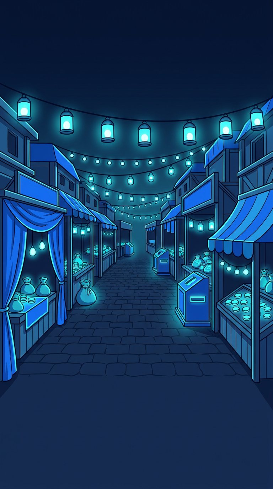
set-bribe-bazaar
Empty 9:16 location plate (final pass): The Bribe Bazaar. Flat 2D cel-shaded, strict Equalizer palette, text-free, character-free, 768x1376.
SETS STILL BEING FINALIZED by the world worker (/workspace/eq-pepe-world, final/ pass with strict palette); re-run pipeline/build_kit.py to refresh. Empty plate: add Pepe via GenerateImage with refs, never by compositing old plates.

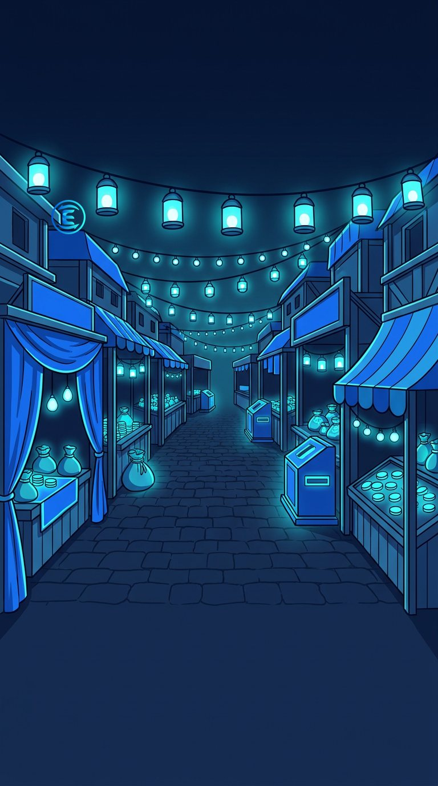
set-bribe-bazaar-branded
Branded version of set-bribe-bazaar: the real Equalizer icon.png composited into the set's blank sign/emblem spots (LOGO LAW), 768x1376.
Use this as the set background when the logo spot is on screen. SETS STILL BEING FINALIZED by the world worker (/workspace/eq-pepe-world, final/ pass with strict palette); re-run pipeline/build_kit.py to refresh. Empty plate: add Pepe via GenerateImage with refs, never by compositing old plates.

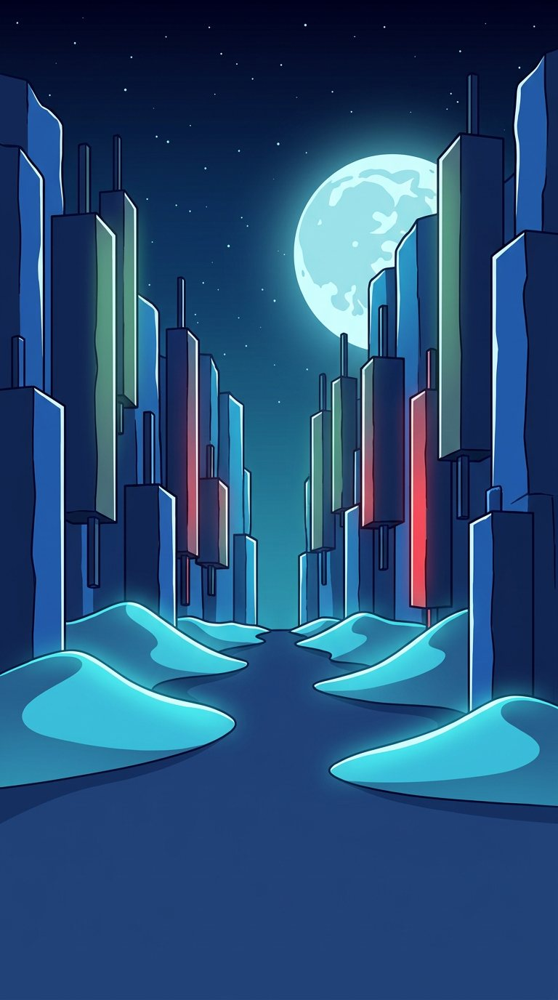
set-chart-canyon
Empty 9:16 location plate (final pass): Chart Canyon. Flat 2D cel-shaded, strict Equalizer palette, text-free, character-free, 768x1376.
SETS STILL BEING FINALIZED by the world worker (/workspace/eq-pepe-world, final/ pass with strict palette); re-run pipeline/build_kit.py to refresh. Empty plate: add Pepe via GenerateImage with refs, never by compositing old plates.

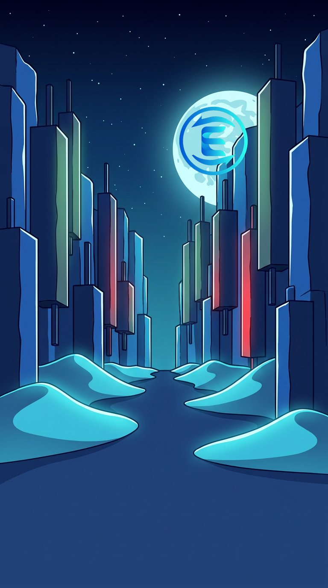
set-chart-canyon-branded
Branded version of set-chart-canyon: the real Equalizer icon.png composited into the set's blank sign/emblem spots (LOGO LAW), 768x1376.
Use this as the set background when the logo spot is on screen. SETS STILL BEING FINALIZED by the world worker (/workspace/eq-pepe-world, final/ pass with strict palette); re-run pipeline/build_kit.py to refresh. Empty plate: add Pepe via GenerateImage with refs, never by compositing old plates.

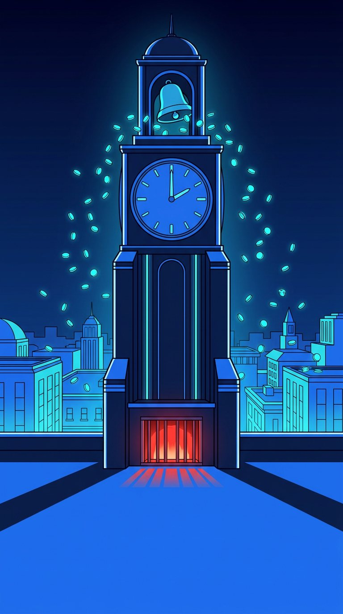
set-epoch-clock-tower
Empty 9:16 location plate (final pass): The Epoch Clock Tower. Flat 2D cel-shaded, strict Equalizer palette, text-free, character-free, 768x1376.
SETS STILL BEING FINALIZED by the world worker (/workspace/eq-pepe-world, final/ pass with strict palette); re-run pipeline/build_kit.py to refresh. Empty plate: add Pepe via GenerateImage with refs, never by compositing old plates.

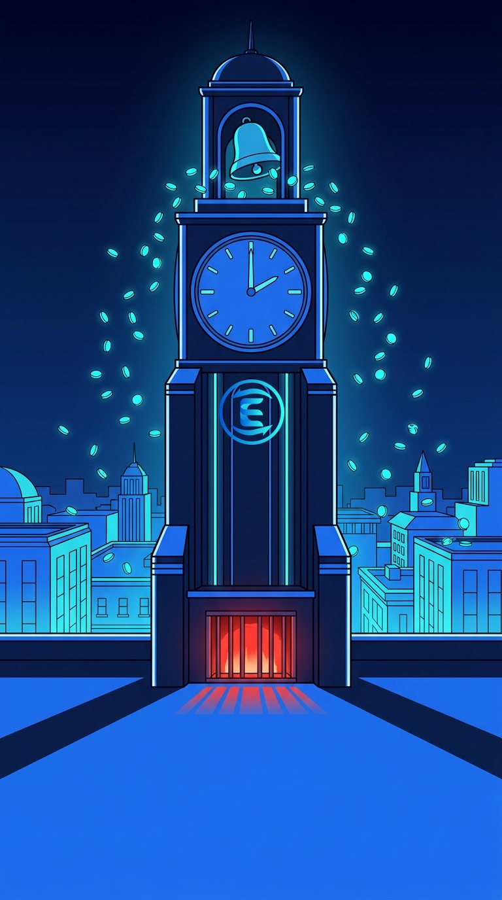
set-epoch-clock-tower-branded
Branded version of set-epoch-clock-tower: the real Equalizer icon.png composited into the set's blank sign/emblem spots (LOGO LAW), 768x1376.
Use this as the set background when the logo spot is on screen. SETS STILL BEING FINALIZED by the world worker (/workspace/eq-pepe-world, final/ pass with strict palette); re-run pipeline/build_kit.py to refresh. Empty plate: add Pepe via GenerateImage with refs, never by compositing old plates.

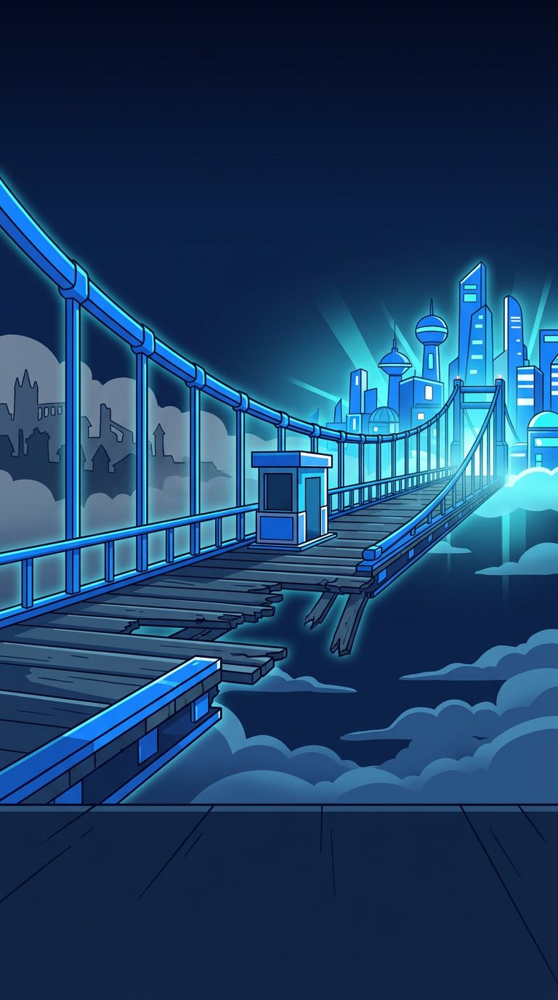
set-gateway-bridge
Empty 9:16 location plate (final pass): The Gateway Bridge. Flat 2D cel-shaded, strict Equalizer palette, text-free, character-free, 768x1376.
SETS STILL BEING FINALIZED by the world worker (/workspace/eq-pepe-world, final/ pass with strict palette); re-run pipeline/build_kit.py to refresh. Empty plate: add Pepe via GenerateImage with refs, never by compositing old plates.

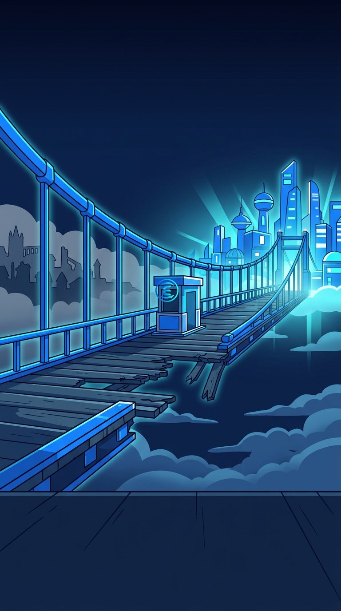
set-gateway-bridge-branded
Branded version of set-gateway-bridge: the real Equalizer icon.png composited into the set's blank sign/emblem spots (LOGO LAW), 768x1376.
Use this as the set background when the logo spot is on screen. SETS STILL BEING FINALIZED by the world worker (/workspace/eq-pepe-world, final/ pass with strict palette); re-run pipeline/build_kit.py to refresh. Empty plate: add Pepe via GenerateImage with refs, never by compositing old plates.

set-liquidation-cliffs
Empty 9:16 location plate (final pass): Liquidation Cliffs, an outdoor mountain landscape under an open night sky with no ceiling and no walls. Flat 2D cel-shaded, strict Equalizer palette, text-free, character-free, 768x1376.
SETS STILL BEING FINALIZED by the world worker (/workspace/eq-pepe-world, final/ pass with strict palette); re-run pipeline/build_kit.py to refresh. Empty plate: add Pepe via GenerateImage with refs, never by compositing old plates.

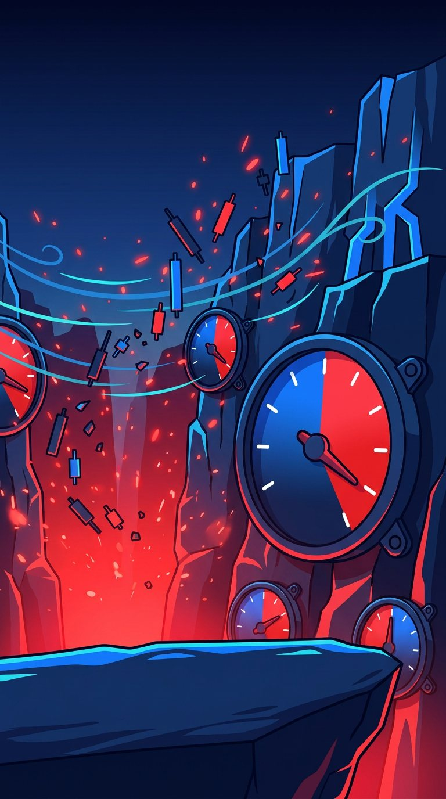
set-liquidation-cliffs-branded
Branded version of set-liquidation-cliffs: the real Equalizer icon.png composited into the set's blank sign/emblem spots (LOGO LAW), 768x1376.
Use this as the set background when the logo spot is on screen. SETS STILL BEING FINALIZED by the world worker (/workspace/eq-pepe-world, final/ pass with strict palette); re-run pipeline/build_kit.py to refresh. Empty plate: add Pepe via GenerateImage with refs, never by compositing old plates.

set-mempool
Empty 9:16 location plate (final pass): The Mempool. Flat 2D cel-shaded, strict Equalizer palette, text-free, character-free, 768x1376.
SETS STILL BEING FINALIZED by the world worker (/workspace/eq-pepe-world, final/ pass with strict palette); re-run pipeline/build_kit.py to refresh. Empty plate: add Pepe via GenerateImage with refs, never by compositing old plates.

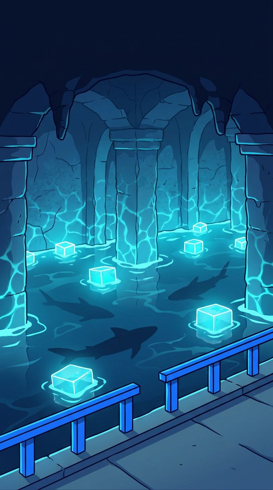
set-mempool-branded
Branded version of set-mempool: the real Equalizer icon.png composited into the set's blank sign/emblem spots (LOGO LAW), 768x1376.
Use this as the set background when the logo spot is on screen. SETS STILL BEING FINALIZED by the world worker (/workspace/eq-pepe-world, final/ pass with strict palette); re-run pipeline/build_kit.py to refresh. Empty plate: add Pepe via GenerateImage with refs, never by compositing old plates.

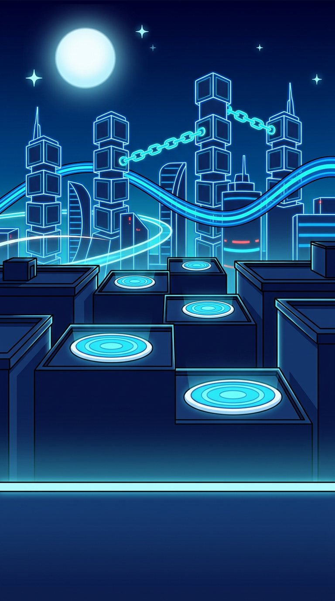
set-p1-city-nano-banana-pro
Empty 9:16 location plate (first pass): Sonic City rooftops with jump pads. 2D cel-shaded, text-free.
SETS STILL BEING FINALIZED by the world worker (/workspace/eq-pepe-world, final/ pass with strict palette); re-run pipeline/build_kit.py to refresh. Empty plate: add Pepe via GenerateImage with refs, never by compositing old plates.

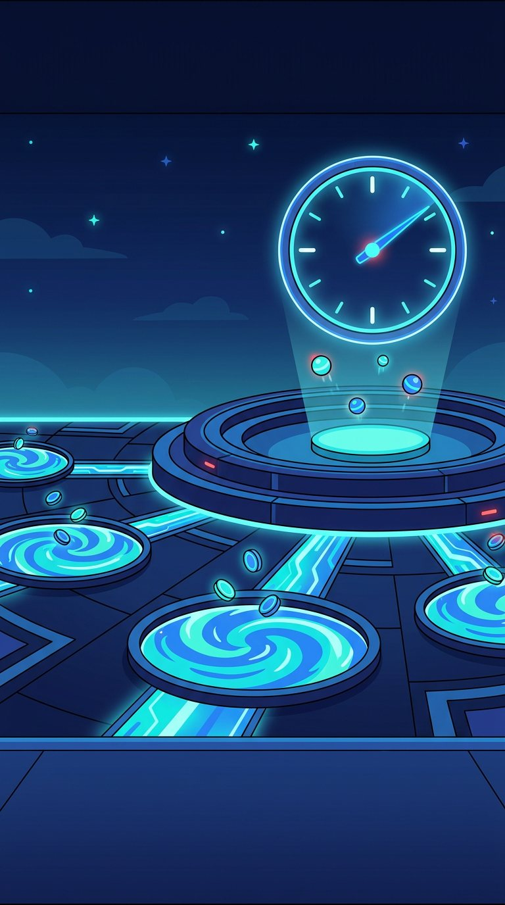
set-p1-dapp-nano-banana-pro
Empty 9:16 location plate (first pass): Inside the dApp: liquidity pools + voting arena + epoch clock. 2D cel-shaded, text-free.
SETS STILL BEING FINALIZED by the world worker (/workspace/eq-pepe-world, final/ pass with strict palette); re-run pipeline/build_kit.py to refresh. Empty plate: add Pepe via GenerateImage with refs, never by compositing old plates.

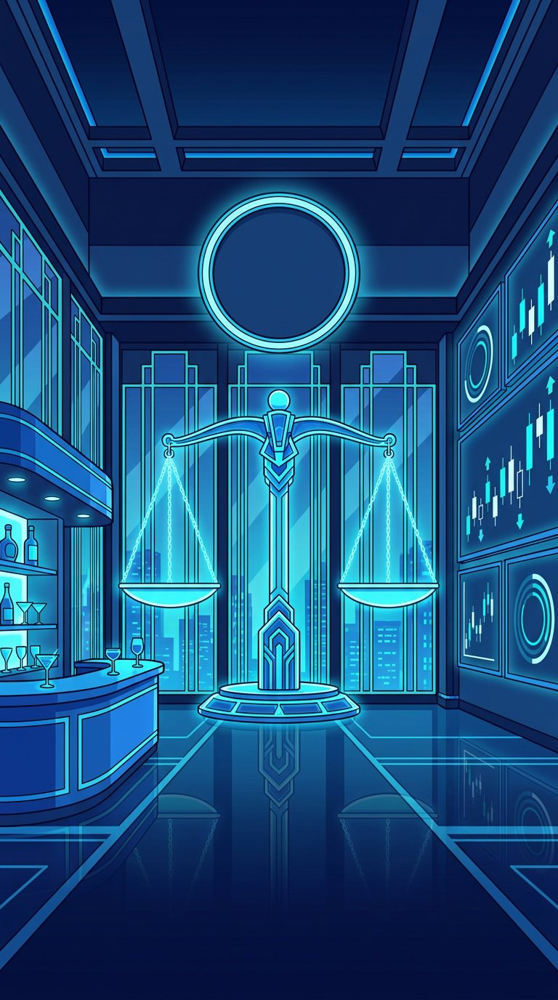
set-scale-room-hq
Empty 9:16 location plate (final pass): Equalizer HQ, The Scale Room. Flat 2D cel-shaded, strict Equalizer palette, text-free, character-free, 768x1376.
SETS STILL BEING FINALIZED by the world worker (/workspace/eq-pepe-world, final/ pass with strict palette); re-run pipeline/build_kit.py to refresh. Empty plate: add Pepe via GenerateImage with refs, never by compositing old plates.

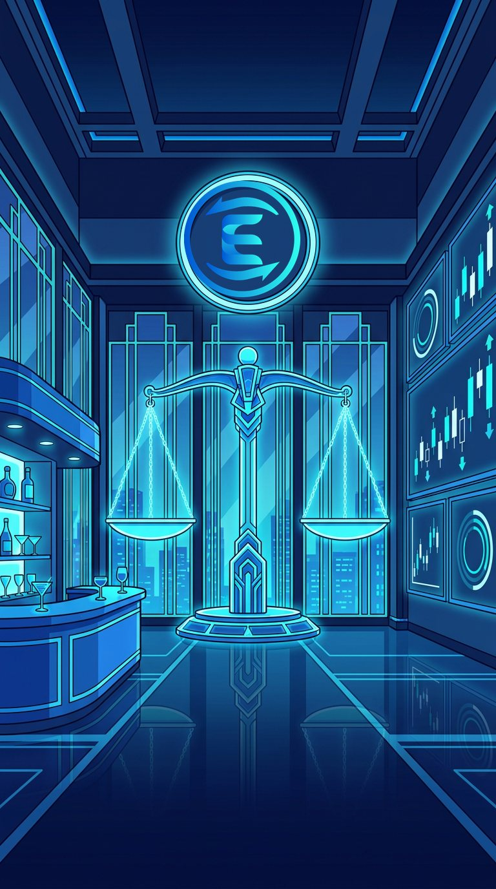
set-scale-room-hq-branded
Branded version of set-scale-room-hq: the real Equalizer icon.png composited into the set's blank sign/emblem spots (LOGO LAW), 768x1376.
Use this as the set background when the logo spot is on screen. SETS STILL BEING FINALIZED by the world worker (/workspace/eq-pepe-world, final/ pass with strict palette); re-run pipeline/build_kit.py to refresh. Empty plate: add Pepe via GenerateImage with refs, never by compositing old plates.

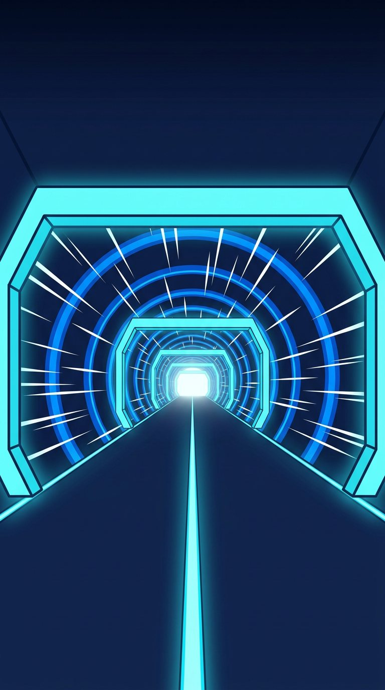
set-sonic-warp-tunnel
Empty 9:16 location plate (final pass): The Sonic Warp Tunnel. Flat 2D cel-shaded, strict Equalizer palette, text-free, character-free, 768x1376.
SETS STILL BEING FINALIZED by the world worker (/workspace/eq-pepe-world, final/ pass with strict palette); re-run pipeline/build_kit.py to refresh. Empty plate: add Pepe via GenerateImage with refs, never by compositing old plates.

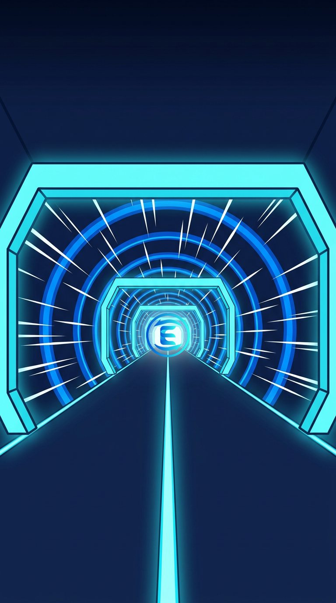
set-sonic-warp-tunnel-branded
Branded version of set-sonic-warp-tunnel: the real Equalizer icon.png composited into the set's blank sign/emblem spots (LOGO LAW), 768x1376.
Use this as the set background when the logo spot is on screen. SETS STILL BEING FINALIZED by the world worker (/workspace/eq-pepe-world, final/ pass with strict palette); re-run pipeline/build_kit.py to refresh. Empty plate: add Pepe via GenerateImage with refs, never by compositing old plates.
Show 20 superseded

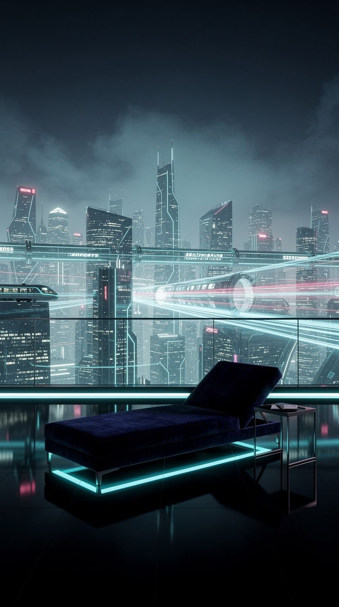
set-ep1-bg-a
Old ep1 background: penthouse rooftop lounge (cinematic style).
Superseded: cinematic/realistic style, does not match the 2D cel-shaded show look. Never build new shots on these.

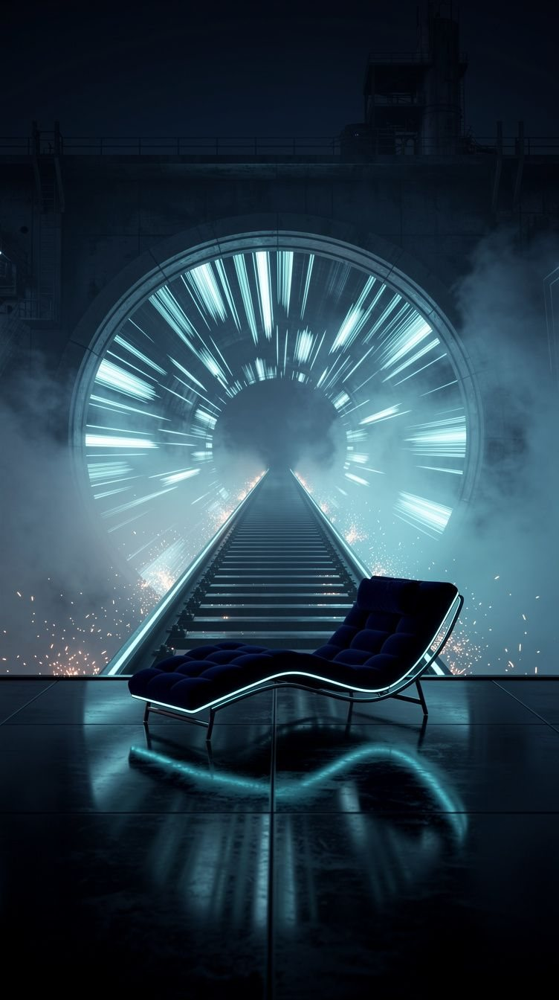
set-ep1-bg-b
Old ep1 background: neon launch platform at warp-tunnel mouth with chaise (ep1 opening plate bg).
Superseded: cinematic/realistic style, does not match the 2D cel-shaded show look. Never build new shots on these.

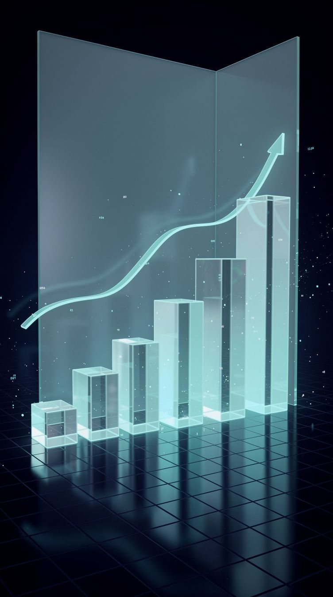
set-ep1-bg-charts
Old ep1 background: abstract glowing bar-chart world.
Superseded: cinematic/realistic style, does not match the 2D cel-shaded show look. Never build new shots on these.

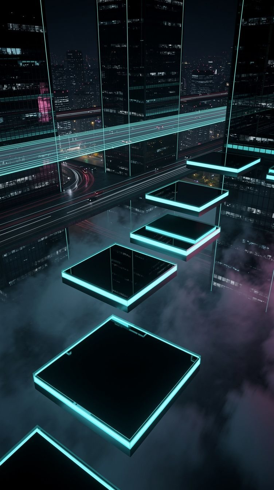
set-ep1-bg-city
Old ep1 background: neon city with floating glowing platforms.
Superseded: cinematic/realistic style, does not match the 2D cel-shaded show look. Never build new shots on these.

set-ep1-bg-tunnel
Old ep1 background: first-person warp tunnel with rail.
Superseded: cinematic/realistic style, does not match the 2D cel-shaded show look. Never build new shots on these.

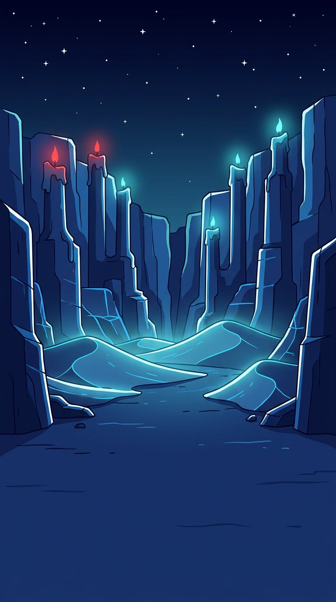
set-final-v1-chart-canyon
Earlier final-pass take (v1) of chart-canyon.
Replaced by the world worker's newer take in sets/final/.

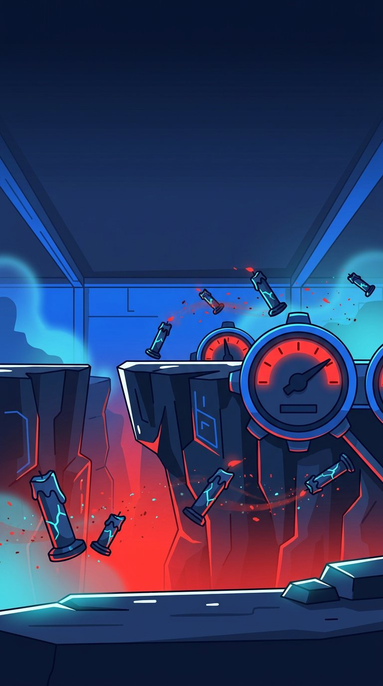
set-final-v1-liquidation-cliffs
Earlier final-pass take (v1) of liquidation-cliffs.
Replaced by the world worker's newer take in sets/final/.

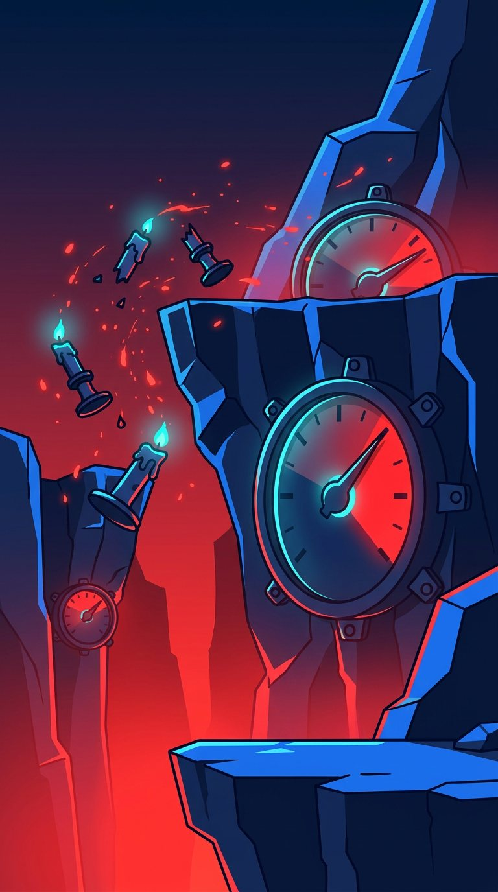
set-final-v1-liquidation-cliffs-v2
Earlier final-pass take (v1) of liquidation-cliffs-v2.
Replaced by the world worker's newer take in sets/final/.

set-final-v1-scale-room-hq
Earlier final-pass take (v1) of scale-room-hq.
Replaced by the world worker's newer take in sets/final/.

set-p1-canyon-nano-banana-pro
Empty 9:16 location plate (first pass): Chart Canyon. 2D cel-shaded, text-free.
First pass, replaced by set-chart-canyon (final pass).

set-p1-canyon-v1-letterbox-nano-banana-pro
Empty 9:16 location plate (first pass, v1-letterbox): Chart Canyon. 2D cel-shaded, text-free.
Earlier variant (v1-letterbox); prompt revised after this pass.

set-p1-city-v1-letterbox-nano-banana-pro
Empty 9:16 location plate (first pass, v1-letterbox): Sonic City rooftops with jump pads. 2D cel-shaded, text-free.
Earlier variant (v1-letterbox); prompt revised after this pass.

set-p1-dapp-v1-letterbox-nano-banana-pro
Empty 9:16 location plate (first pass, v1-letterbox): Inside the dApp: liquidity pools + voting arena + epoch clock. 2D cel-shaded, text-free.
Earlier variant (v1-letterbox); prompt revised after this pass.

set-p1-hq-nano-banana-pro
Empty 9:16 location plate (first pass): Pepe's HQ penthouse lounge. 2D cel-shaded, text-free.
First pass, replaced by set-scale-room-hq (final pass).

set-p1-hq-v0-generic-nano-banana-pro
Empty 9:16 location plate (first pass, v0-generic): Pepe's HQ penthouse lounge. 2D cel-shaded, text-free.
Earlier variant (v0-generic); prompt revised after this pass.

set-p1-hq-v0-generic-seedream-v5-pro
Empty 9:16 location plate (first pass, v0-generic): Pepe's HQ penthouse lounge. 2D cel-shaded, text-free.
Earlier variant (v0-generic); prompt revised after this pass.

set-p1-hq-v1-letterbox-nano-banana-pro
Empty 9:16 location plate (first pass, v1-letterbox): Pepe's HQ penthouse lounge. 2D cel-shaded, text-free.
Earlier variant (v1-letterbox); prompt revised after this pass.

set-p1-hq-v1-letterbox-nano-banana-pro-v2-blurband
Empty 9:16 location plate (first pass, v1-letterbox): Pepe's HQ penthouse lounge. 2D cel-shaded, text-free.
Earlier variant (v1-letterbox); prompt revised after this pass.